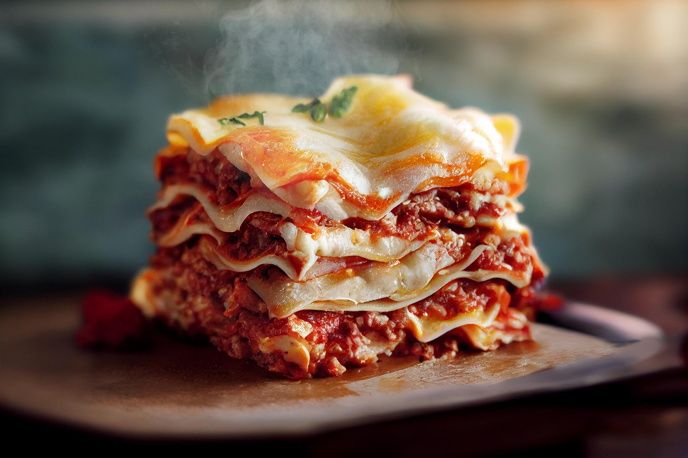

Lasagna. Ok, so it's like a pasta dish? With all these layers and stuff? Stuffed layers. Like I think at the bottom there's the meat/sauce mixture. Then... Uh maybe the pasta? And then the mozzarella and the bechamel sauce, idk in which order. And then you repeat that a couple times and then you top with a truckload of grated cheese (or maybe parmesan, parmesan rules!).
About that bechamel sauce: It has a roux base. And a roux is basically a basic sauce made by mixing melted butter with flour and milk. And it rules. (I know, I'm as shocked as you are, something with melted butter being good, get outta here). Y'also gotta have some pepper, salt and nutmeg in there I think.
Home page